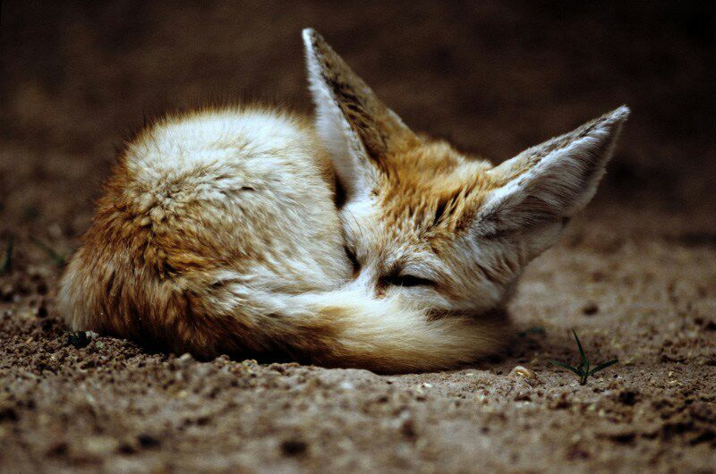

Raposa
Raposa do Deserto/Feneco
- Nome científico: ⠀Vulpes zerda,
- Região:⠀Norte da África,
- Bioma:⠀Deserto do Saara,
- Hábitos:⠀Noturnos,
- Locomoção:⠀Andando,
- Reprodução: ⠀Sexuada são víviparos,
- Obtenção de alimento:⠀Heterotrófico: onívoro,
- Sistemas:
- Respiratório: ⠀ pulmonar,
- Circulatório: ⠀ fechado,
- Nervoso: ⠀ presente.
- Disgestório: ⠀ completo.
Adaptações
Relacionadas ao ambiente:
Todo seu corpo é projetado para uma vida em ambiente desertico: seu corpo pequeno, patas peludas e orelhas excepcionalmente grandes, que são utilizadas para regular o calor. Sua pelagem e suas funções renais também são adaptadas às altas temperaturas e à escassez de água. Possuem uma audição sensível para ouvir presas se movendo no subsolo.Suas orelhas e visão:
As enormes orelhas são capazes de filtrar o som através de muitos centímetros de areia e podem detectar diferenças sútis entre os chamados de outros fenecos. A visão noturna é aprimorada por uma retina reflexiva, essa adaptação cria a ilusão de olhos brilhantes e é característica dos animais noturnos.
-
❝Os rins do feneco são projetados para filtrar urina altamente concentrada usando o mínimo de água possível. [...] Seu coração é 40% menor do que o esperado para sua altura. Se a temperatura externa for inferior a 35 °C, o feneco respira a 23 baforadas por minuto. No entanto, se esse valor for excedido, a taxa de respiração pode aumentar para até 690 respirações por minuto. Os vasos sanguíneos nas orelhas e nas plantas dos pés dilatam com o aumento da temperatura para liberar o máximo de calor possível.❞
https://www.biodiversity4all.org/taxa/42058-Vulpes-zerda
Reprodução
Não se sabe muito sobre a reprodução dessa espécie, entretanto acredita-se que apenas os machos dominantes conseguem acasalar. Cada casal reprodutor tem seu próprio território demarcado for fezes e urina.Os fenecos acasalam uma vez por ano gerando ninhadas pequenas, os filhotes são mantidos por perto por 6 meses, sendo animais muito agressivos ao proteger seus filhotes.
Inspiração

-
O personagem Tighnari do jogo Genshin Impact teve seu design inspirado nas raposas do deserto!